install.packages("tidyverse")
install.packages("palmerpenguins")5 Next-level Data Visualization
NoteLearning Goals
After this lesson, you should be able to:
- Explain what the grammar of graphics is
- Explain ggplot2’s computational model
- Choose appropriate visualizations based on data type(s)
- List the steps to making a well-designed visualization
- Assess what aspects of a visualization need improvement
- Create well-designed data visualizations
This chapter is about creating and customizing data visualizations in R with the ggplot2 package. The first section is an overview of data visalization systems for R. The second and third sections provide a detailed example of how to use ggplot2 to recreate a plot. These serve as a review of (or introduction to) ggplot2’s interfaces and computational model; they explain how to reason about and modify visualizations created with the package. The fourth section outlines the (non-programming) graphic design skills necessary to make high-quality plots. Finally, the remaining sections put all of these ideas into practice through case studies with real data.
5.1 Data Visualization in R
There are many ways to create visualizations in R, because visualization is a highly effective way to summarize and gain insights about data. Tools for creating static visualizations include:
- R’s built-in base and graphics packages provide many data visualization functions. For instance, the
plotfunction creates scatter plots and line plots, while thebarplot,boxplot,histogram, andsmoothScatterfunctions are named after the plots they create. With these functions, adding more details to a plot is relatively straightforward (for example, use thelinesfunction to add lines). There’s also no need to install any packages to use them. A disadvantage is that they all have slightly different parameters, which can make them difficult to learn and remember. - The tinyplot package extends R’s built-in data visualization functions to provide better support for grouped data, custom color palettes, and more, without changing the feel. By design, the package has no other dependencies.
- The ggplot2 package uses the grammar of graphics, a convenient way to describe visualizations in terms of layers. The package provides a consistent interface, detailed documentation, and a cheatsheet, all of which are helpful for learning. As R’s most-downloaded package, ggplot2 is so popular that people have created equivalents for the Python and Julia programming languages. The package is also part of the Tidyverse, a popular collection of R packages designed to work well together.
- The lattice package is another package that aims to provide rich support for multivariate and grouped data. While lattice creates nice-looking plots by default, customizing them usually requires writing a lot of boilerplate code.
Many packages extend these systems further. There are also many packages for creating dynamic visualizations, which react to user input or change over time, that we do not cover here.
Warning
R’s built-in data visualization functions, ggplot2, and lattice are not interoperable! Consequently, it’s best to choose one system to use exclusively.
We recommend ggplot2 and will focus on it for the rest of this chapter.
Important
To follow along with this chapter, you’ll need recent versions of the tidyverse (which includes ggplot2) and palmerpenguins packages. You can install or update these by running this code in an R prompt:
5.1.1 The Grammar of Graphics
The “gg” in ggplot2 stands for grammar of graphics. The idea of a grammar of graphics is that visualizations can be built up in layers. In ggplot2, you can add layers to a plot with plus (+). There are three layers that every plot must have are:
| Layer | Functions | Description |
|---|---|---|
| data | ggplot2 |
Sets the data used to make the plot. |
| geometry | geom_* |
Sets the geometry (points, lines, etc.) of the plot. |
| aesthetics | aes |
Sets the relationship between data and geometries. |
Each layer corresponds to one or more functions. The geometry layer consists of multiple functions; the asterisk (*) in the table is a wildcard.
There are also several optional layers. Here are a few:
| Layer | Functions | Description |
|---|---|---|
| scale | scale_* |
Sets palettes (color, shape, etc.) and labels |
| theme | theme_* |
Sets appearance of non-data elements |
| facets | facet_* |
Makes side-by-side plots |
| annotation | annotation_* |
Adds manually-positioned annotations |
| guides | guide_* |
Sets axes and legends |
| coordinate | coord_* |
Sets coordinate systems (Cartesian, logarithmic, polar) |
The ggplot2 documentation provides a complete list of all layers and their corresponding functions.
Tip
The grammar of graphics breaks the elements of statistical graphics into parts in an analogy to human language grammars. Knowing how to put together subject nouns, object nouns, verbs, and adjectives allows you to construct sentences that express meaning. Similarly, the grammar of graphics is a collection of layers and the rules for putting them together to graphically express the meaning of your data.
5.2 Example: Palmer Penguins, Part 1
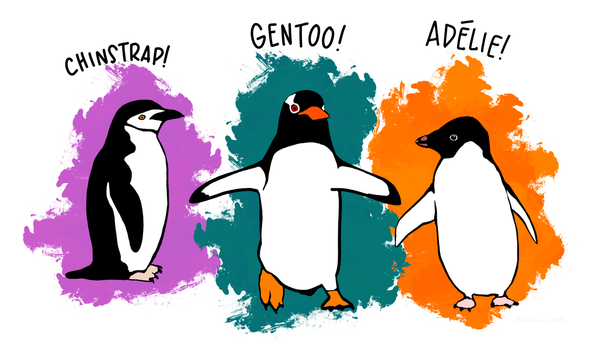
As a refresher about the fundamentals of ggplot2, let’s recreate the scatter plot in Figure 5.2, which shows flipper length versus bill length for hundreds of individual penguins from three different species: Adélie, Chinstrap, and Gentoo.

The scatter plot uses the Palmer Penguins dataset, which was collected by Dr. Kristen Gorman at Palmer Station, Antarctica. The plot was created by Alison Horst, who also packaged the data for public use. The package is called palmerpenguins; install it now if you didn’t earlier.
Tip
Recreating plots from scratch is a great way to practice and learn new data visualization skills.
Before you start working on any plot, it’s a good idea to take a look at the data. Use the library function to load the palmerpenguins package, which automatically loads the dataset in a variable called penguins. Then use the head function to print just the first few rows:
library("palmerpenguins")
Attaching package: 'palmerpenguins'The following objects are masked from 'package:datasets':
penguins, penguins_rawhead(penguins)# A tibble: 6 × 8
species island bill_length_mm bill_depth_mm flipper_length_mm body_mass_g
<fct> <fct> <dbl> <dbl> <int> <int>
1 Adelie Torgersen 39.1 18.7 181 3750
2 Adelie Torgersen 39.5 17.4 186 3800
3 Adelie Torgersen 40.3 18 195 3250
4 Adelie Torgersen NA NA NA NA
5 Adelie Torgersen 36.7 19.3 193 3450
6 Adelie Torgersen 39.3 20.6 190 3650
# ℹ 2 more variables: sex <fct>, year <int>Let’s also check the structural summary with the str function:
str(penguins)tibble [344 × 8] (S3: tbl_df/tbl/data.frame)
$ species : Factor w/ 3 levels "Adelie","Chinstrap",..: 1 1 1 1 1 1 1 1 1 1 ...
$ island : Factor w/ 3 levels "Biscoe","Dream",..: 3 3 3 3 3 3 3 3 3 3 ...
$ bill_length_mm : num [1:344] 39.1 39.5 40.3 NA 36.7 39.3 38.9 39.2 34.1 42 ...
$ bill_depth_mm : num [1:344] 18.7 17.4 18 NA 19.3 20.6 17.8 19.6 18.1 20.2 ...
$ flipper_length_mm: int [1:344] 181 186 195 NA 193 190 181 195 193 190 ...
$ body_mass_g : int [1:344] 3750 3800 3250 NA 3450 3650 3625 4675 3475 4250 ...
$ sex : Factor w/ 2 levels "female","male": 2 1 1 NA 1 2 1 2 NA NA ...
$ year : int [1:344] 2007 2007 2007 2007 2007 2007 2007 2007 2007 2007 ...The structure of a dataset can affect how hard it is to visualize. The functions in ggplot2 are designed to work with tidy data, which is tabular data where:
- Each observation has its own row.
- Each feature has its own column.
- Each value has its own cell.
The penguins data appears to satisfy all three, which isn’t surprising since this dataset is packaged for others to use. If there was a structural problem, we would need to reshape the data (see Section 3.1).
The types (or classes) of the columns in a dataset can also affect visualization. Generally, numerical data should be integer or numeric, categorical data should be factor, Boolean data should be logical, and text should be character. Take extra care to convert dates, times, and other temporal data to appropriate types, as explained in Section 1.3. Inappropriate data types can cause visualization functions to fail with an error, or even worse, produce a plot that misrepresents the data.
The data types in the penguins data look okay, so we’re ready to start plotting!
5.2.1 Layer 1: Data
The first layer every ggplot2 plot requires is a data layer, which specifies the data that will be used to make the plot.
You can create a data layer (and the beginnings of a plot) with the ggplot function.
Let’s load the package, then use the ggplot function to specify that we’re plotting the penguins data:
library("ggplot2")
ggplot(penguins)
The result is a blank plot. We’ve told ggplot2 what data to use, but still haven’t said how to represent it!
5.2.2 Layer 2: Geometry
The second layer every ggplot2 plot requires is a geometry layer. The geometry layer specifies which geometries—points, lines, and other marks—will represent the data on the plot.
You can create a geometry layer with any of the ggplot2 functions whose names begin with geom_. Each corresponds to a different kind of geometry and plot. Add the layer to the plot with a plus sign (+).
We want to make a scatter plot, so we’ll use the geom_point function for the geometry layer. So the code becomes:
ggplot(penguins) +
geom_point()Error in `geom_point()`:
! Problem while setting up geom.
ℹ Error occurred in the 1st layer.
Caused by error in `compute_geom_1()`:
! `geom_point()` requires the following missing aesthetics: x and y.When you run this code, you’ll see an error message. The plot is still missing one layer. Fortunately, ggplot2 tells us exactly what we need to do in the error message.
5.2.3 Layer 3: Aesthetics
The third layer every ggplot2 plot requires is an aesthetics layer. The aesthetics layer specifies how to represent the data in the data layer with the geometries in the geometry layer. In other words, it describes the relationship between the two.
The aes function creates an aesthetics layer. You can add it to the plot like any other layer.
As we saw in the error message in Section 5.2.2, the geom_point function requires us to set two aesthetics, x and y. We’ll set them to flipper_length_mm and bill_length_mm, since these are on the x- and y-axis, respectively, of Figure 5.2:
ggplot(penguins) +
aes(x = flipper_length_mm, y = bill_length_mm) +
geom_point()Warning: Removed 2 rows containing missing values or values outside the scale range
(`geom_point()`).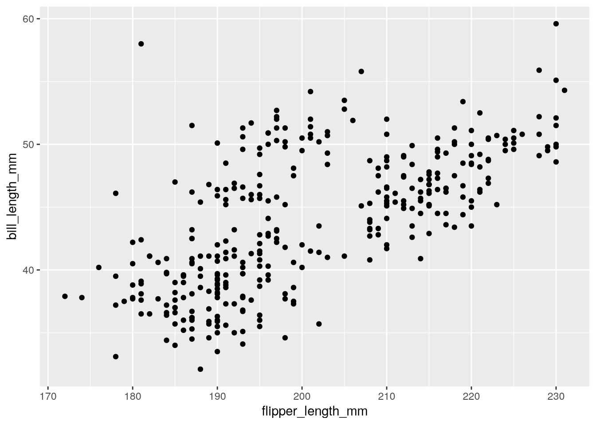
Now we’ve got a plot!
Notice that ggplot2 displays a warning about missing values or values outside the scale range. This warning is a reminder that some of the observations in the dataset are not displayed on the plot, either because they contain missing values (NA) or because they’re outside the limits of the plot’s axes. By default, ggplot2 will adjust the axes to include all observations. So in this case, the warning means that the penguins dataset contains 2 missing values.
In Figure 5.2, the color and shape of each point is determined by the species. In the penguins dataset, the species column records the species of each bird. We can connect the color and shape of the points to the species by setting the optional color and shape aesthetics:
ggplot(penguins) +
aes(
x = flipper_length_mm,
y = bill_length_mm,
color = species,
shape = species
) +
geom_point()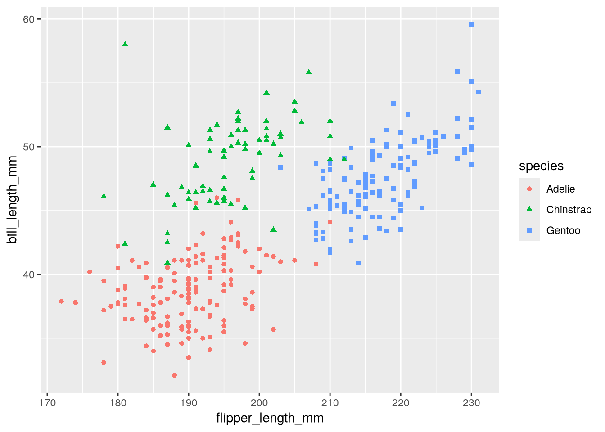
This version of the copycat plot has roughly the same form as Figure 5.2, although there’s still a long way to go to make it exactly the same. We’ll address the remaining differences in Section 5.3.
5.3 Example: Palmer Penguins, Part 2
There are several details we still need to change in the copycat plot from Section 5.2 to make it match Figure 5.2. In particular:
- The clouds of points are missing the regression lines, which makes it harder to see the trends.
- The colors of the points are different. In this case, they’re red, green, and blue, which are not colorblind-safe.
- The background color and gridline color are different.
- The legend is off to the side.
- There are no titles, and the labels are column names rather than descriptions.
We’ll fix these in the subsequent sections. Each section focuses on a single detail and associated ggplot2 layer.
5.3.1 Adding Regression Lines (Geometry)
The visualization in Figure 5.2 shows a linear regression line for each group of penguins. Let’s add those to our copycat plot. In ggplot2, regression lines are just another kind of geometry. Lines smooth out noisy data, so the geometry is called geom_smooth.
By default, geom_smooth fits and displays a LOESS or GAM line, depending on the size of the dataset. It also displays the standard error for the fitted line.
You can add more than one geometry to a plot, so we’ll add geom_smooth to the plot. In order to match Figure 5.2, we’ll set method = lm to make it fit a linear regression and se = FALSE to hide the standard error:
ggplot(penguins) +
aes(
x = flipper_length_mm,
y = bill_length_mm,
color = species,
shape = species
) +
geom_point() +
geom_smooth(method = lm, se = FALSE)`geom_smooth()` using formula = 'y ~ x'Warning: Removed 2 rows containing non-finite outside the scale range
(`stat_smooth()`).Warning: Removed 2 rows containing missing values or values outside the scale range
(`geom_point()`).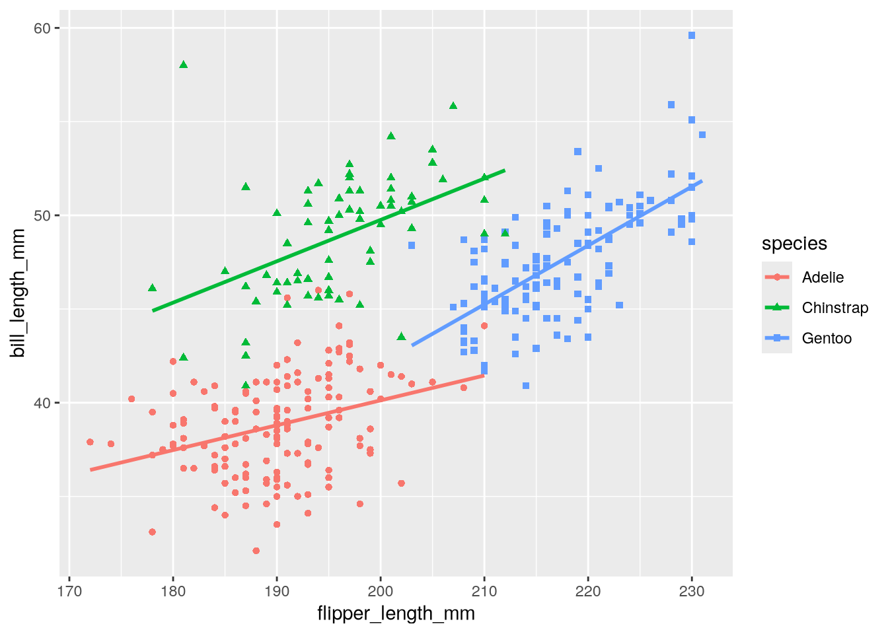
Notice ggplot2 prints a new warning, non-finite outside the scale range, about geom_smooth. Like the other warning, this is a reminder that there are missing values in the dataset.
5.3.2 Changing the Foreground Colors (Scale)
The colors in our copycat plot are red, green, and blue. People with color blindness may have trouble distinguishing between these colors, so we can improve the accessibility of the plot by using a different color palette. Figure 5.2 uses orange, purple, and cyan, which are easier to distinguish. Let’s use those colors.
In ggplot2, the scale layer controls palettes (for colors, shapes, line types, and more), as well as text labels. Most of the functions for the scales layer have names that begin with scale_, although there are a few exceptions. The second part of the name is usually a related aesthetic. For instance, we can use scale_color_manual to manually set the palette for the color aesthetic.
Allison Horst created Figure 5.2 with R and ggplot2. The colors she used are built-in, named colors: darkorange, purple, and cyan4. We’ll use these to set the values parameter (which corresponds to the palette) in scale_color_manual:
ggplot(penguins) +
aes(
x = flipper_length_mm,
y = bill_length_mm,
color = species,
shape = species
) +
geom_point() +
geom_smooth(method = lm, se = FALSE) +
scale_color_manual(values = c("darkorange", "purple", "cyan4"))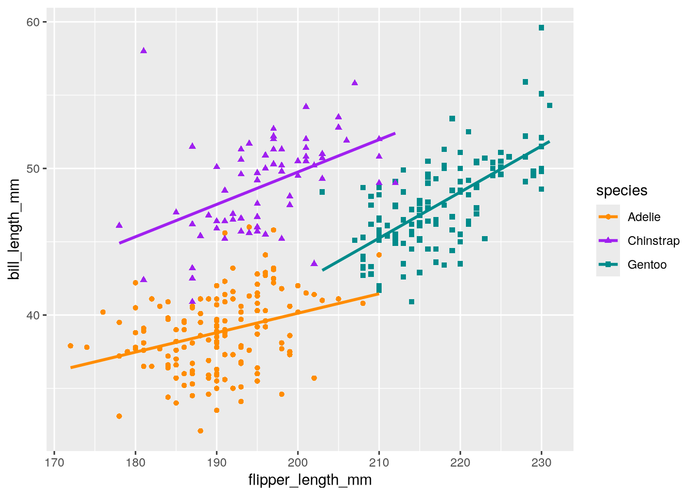
Tip
You can use Cynthia Brewer’s Color Brewer website to select colorblind-friendly color schemes. Color Brewer is integrated directly into ggplot2. For instance, the scale_color_brewer function can pull a named color scheme from Color Brewer directly into your plot as the color scale.
5.3.3 Changing the Background Color (Theme)
In Figure 5.2, the background is white and the grid lines are gray, but in our copycat plot, the background is gray and the grid lines are white. The color of the background and grid lines, as well as the other visual details of a plot that are not related to data, are controlled by ggplot2’s theme layer.
We can use the theme_minimal function to switch to the minimal theme, which has a white background and gray grid lines:
ggplot(penguins) +
aes(
x = flipper_length_mm,
y = bill_length_mm,
color = species,
shape = species
) +
geom_point() +
geom_smooth(method = lm, se = FALSE) +
scale_color_manual(values = c("darkorange", "purple", "cyan4")) +
theme_minimal()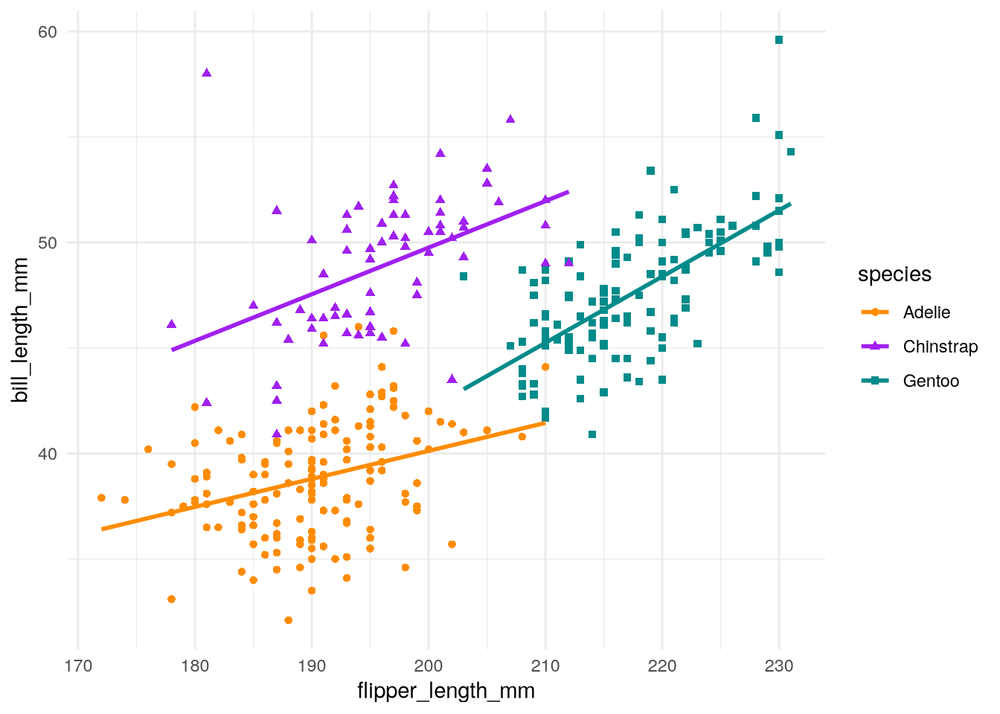
Several themes are included with ggplot2, and the community has created even more as extension packages. See the ggplot2 documentation for more details.
5.3.4 Moving the Legend (Theme)
The theme of a ggplot2 plot also controls where the legend is positioned. So if we want to move the legend in the copycat plot to inside the plotting area, like in Figure 5.2, we have to adjust the theme layer.
We can use the theme function to make small adjustments to the theme layer. In this case, we’ll set legend.position to move the legend inside the plotting area. We’ll also set legend.position.inside to specify where to put the plot (where c(0, 0) is the bottom left and c(1, 1) is the top right). The code for the copycat plot becomes:
ggplot(penguins) +
aes(
x = flipper_length_mm,
y = bill_length_mm,
color = species,
shape = species
) +
geom_point() +
geom_smooth(method = lm, se = FALSE) +
scale_color_manual(values = c("darkorange", "purple", "cyan4")) +
theme_minimal() +
theme(legend.position = "inside", legend.position.inside = c(0.85, 0.15))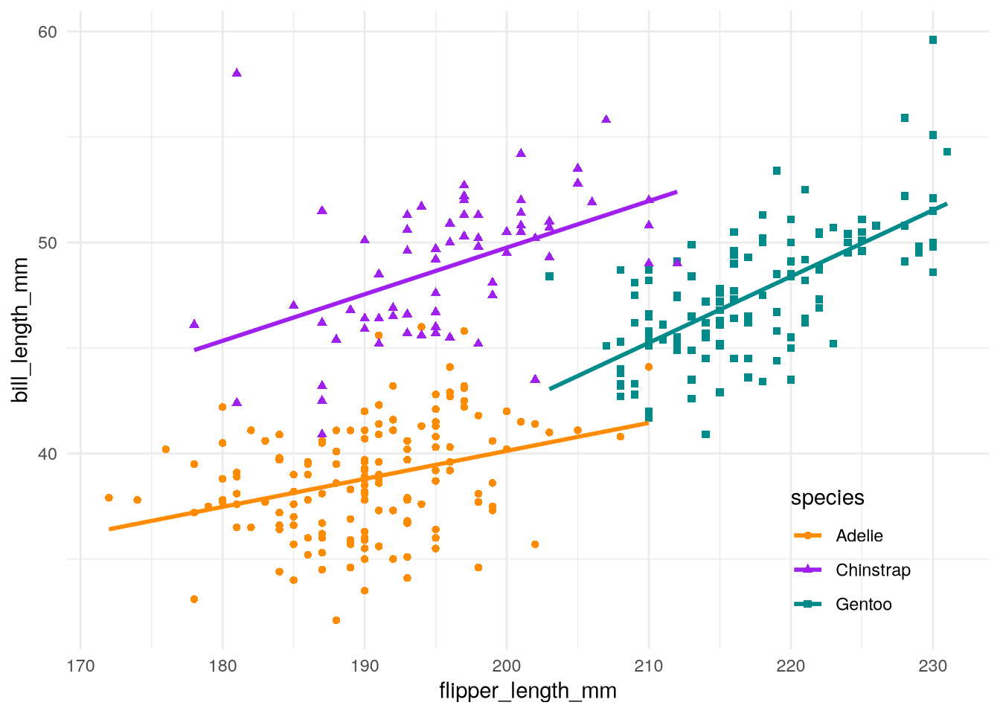
See the ggplot2 documentation for the complete list of parameters you can use to fine-tune the theme.
5.3.5 Adding Labels (Scale)
Adding labels and titles to a visualization is a critical step. Without labels, the viewer might not be able to understand what the visualization shows. In ggplot2, we can set these with the scale layer function labs (short for “labels”). We can set a title, subtitle, and also a label for each aesthetic.
Here’s how to set the labels on the copycat plot to match Figure 5.2:
ggplot(penguins) +
aes(
x = flipper_length_mm,
y = bill_length_mm,
color = species,
shape = species
) +
geom_point() +
geom_smooth(method = lm, se = FALSE) +
scale_color_manual(values = c("darkorange", "purple", "cyan4")) +
theme_minimal() +
theme(legend.position = "inside", legend.position.inside = c(0.85, 0.15)) +
labs(
title = "Flipper and bill length",
subtitle = "Dimensions for Adelie, Chinstrap and Gentoo Penguins at Palmer Station LTER",
x = "Flipper length (mm)",
y = "Bill length (mm)",
color = "Penguin species",
shape = "Penguin species"
)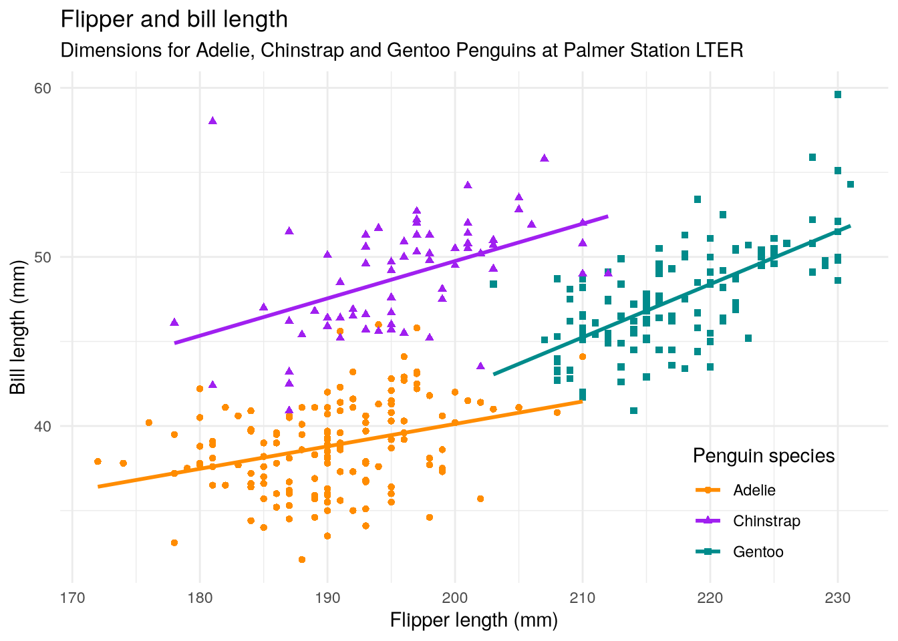
5.4 Visualization Best Practices
Besides programming skills, to create a visualization that conveys a clear message about a dataset, you need to know graphic design best practices and the principles of visual perception. DataLab’s Principles of Data Visualization covers these important skills.
DataLab’s Data Visualization Guidelines is a concise reference and reminder of these skills. Bookmark or print out a copy and run through the checklist whenever you design a visualization. The case studies in the {numref}case-studies show how to fix some of the issues on the checklist.
NoteRevisiting the Palmer Penguins Plot
Let’s apply the Data Visualization Guidelines to the Palmer Penguins plot (Figure 5.2):
- This plot has two numerical features (bill length and flipper length), expressed using a scatter plot. There’s also a categorical feature (species), which is indicated by the different colors and shapes of the plot.
- The plot expresses the fact that flipper length is positively associated with bill length for all three species of penguins, but the sizes and the relationships between them are unique to each species.
- There’s a title and a legend, the axes are labeled with units, and all of the text is in plain language.
- There’s a risk that the data may hide the message, so a smoothing line is added to each species for clarity.
- The colors are accessible to colorblind people.
This is a good data visualization!
5.5 Case Study: Plotting a Categorical Distribution
Note
This case study shows how to:
- Plot the distribution of one or more categorical features
- Create faceted plots
When you start working with a new dataset, the first thing you should do is explore (and clean) the features. Exploring the features means inspecting the distribution of each feature, as well as checking for relationships between features. For this case study, let’s use ggplot2 to explore the categorical features in the Palmer Penguins data set introduced in Section 5.2.
Consider the species of the penguins the data set. Are the three species—Adélie, Chinstrap, and Gentoo—equally represented? This question is asking how the categorical species feature is distributed. Tables, bar plots, and dot plots are all good tools for examining the distribution of a single categorical feature. Let’s make a table and a bar plot.
Tip
Inspecting data through multiple methods is a good way to verify that your code and interpretations are correct.
You can use the R’s table function to make a table:
table(penguins$species)
Adelie Chinstrap Gentoo
152 68 124 To make the bar plot, you can use ggplot2’s geom_bar function. Make a bar plot of the distribution of penguin species:
ggplot(penguins) +
aes(x = species) +
geom_bar() +
labs(x = "Species", y = "Count")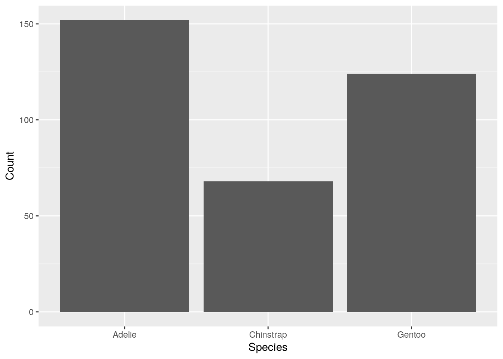
Besides species, the Palmer Penguins dataset also includes information about the island where each bird was observed and the biological sex of each bird. When a dataset has multiple categorical features, it’s important to check how the observations are grouped within them, since unbalanced groups can bias analyses. You can use color to represent a second categorical feature in a bar plot. In ggplot2, the fill color is set by the fill aesthetic. So to make the bar plot show both species and sex:
ggplot(penguins) +
aes(x = species, fill = sex) +
geom_bar() +
labs(x = "Species", y = "Count")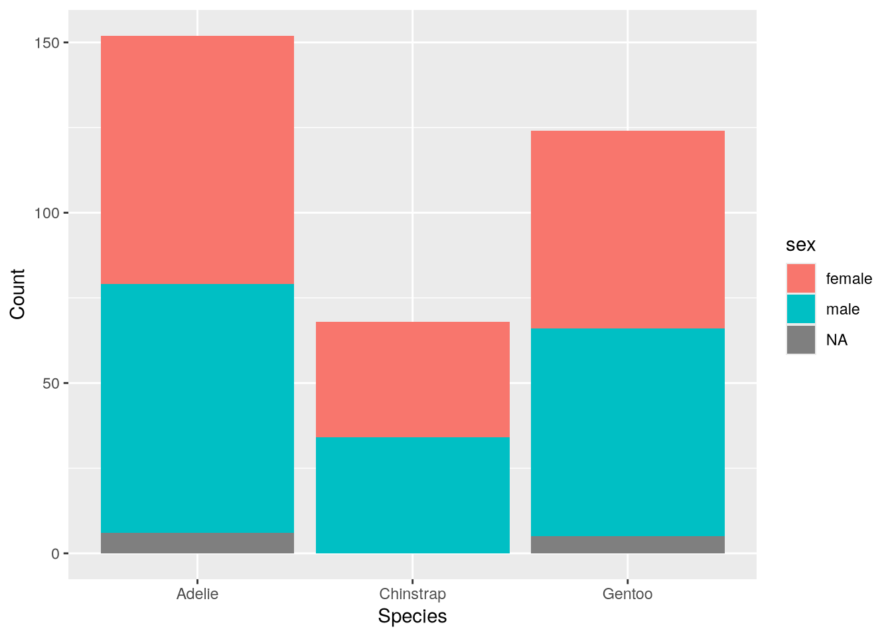
By default, the geom_bar function draws the bars stacked. If we want to compare the groups across both species and sex, it’s better to draw the bars side-by-side. To do this, set position = "dodge" in the geometry:
ggplot(penguins) +
aes(x = species, fill = sex) +
geom_bar(position = "dodge") +
labs(x = "Species", y = "Count")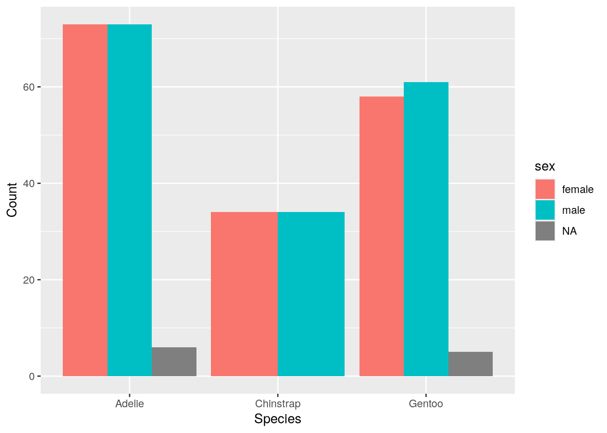
The plot suggests the sexes are relatively well-balanced across the observed penguins, regardless of species. Of course, there’s still the island feature to consider.
A bar plot can really only summarize two features at once, and many other types of plots are also limited to just two or three features. One way to represent more categorical features is to use facets, side-by-side plots that each show data for a mutually exclusive category or combination of categories.
Most plotting packages provide convenience functions for making faceted plots, and ggplot2 is no exception. There are two functions for facetting:
- The
facet_wrapfunction displays a row of plots grouped by one categorical feature, wrapping to a new row whenever it runs out of horizontal space. - The
facet_gridfunction displays a grid of plots grouped by one or two categorical features arranged along the axes of the grid.
For example, let’s use facet_grid to indicate sex by row, island by column, and use a separate bar for each species:
ggplot(penguins) +
aes(x = species) +
geom_bar(position = "dodge") +
labs(x = "Species", y = "Count") +
facet_grid(sex ~ island)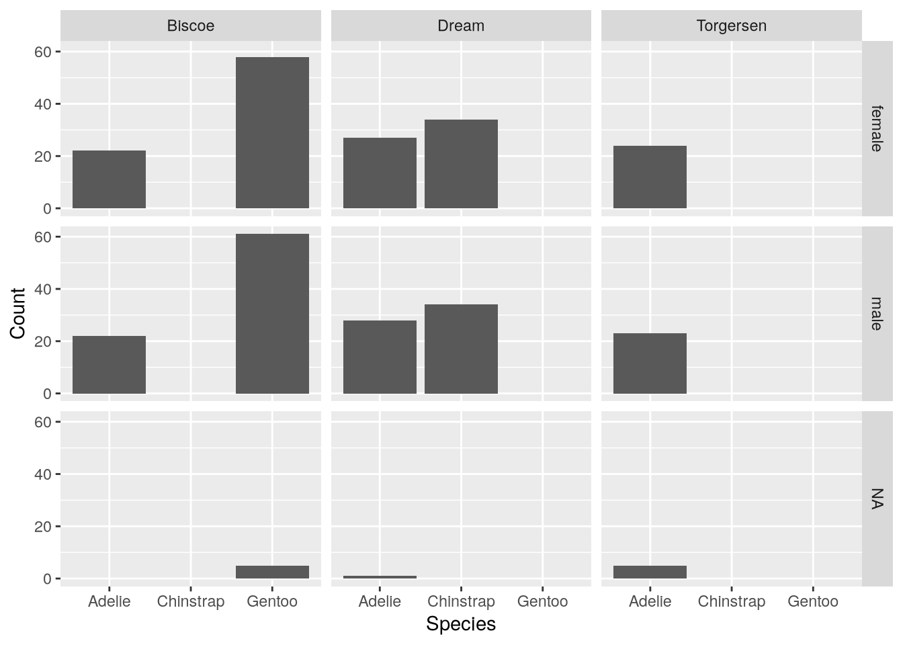
Tip
If you want to change the names of the levels in a factor (a categorical feature), do that as a separate step before making visualizations. DataLab’s R Basics workshop reader provides details about how to create factors and set level names.
ggplot2’s functions for creating and customizing faceted plots are convenient, and you can read more about them in the documentation.
Note
This case study focuses on categorical features and the next focuses on continuous features. So what should you do if you have a discrete feature?
Discrete features share properties of categorical features (both are enumerable) and properties of continuous features (both are quantitative). This usually means you can choose whether to treat discrete features as categorical or continuous. Categorical methods tend to be more appropriate for discrete features that take relatively few distinct values, and continuous methods tend to be more appropriate for ones that don’t.
5.6 Case Study: Plotting a Continuous Distribution
Note
This case study shows how to:
- Plot the distribution of one or more continuous features
Section 5.5 shows how to visualize the distribution of a categorical feature. For this case study, let’s examine one of the continuous features in the Palmer Penguins dataset from Section 5.2. There are many different ways to visualize continuous features, such as histograms, density plots, box plots, violin plots, and empirical cumulative distribution function plots.
Let’s visualize the distribution of the birds’ body mass, which is recorded in the body_mass_g feature. Some of the geometries for plotting continuous distributions are:
geom_histogramto make a histogramgeom_densityto make a density (or “kernel density estimator”) plotgeom_boxplotto make a box plotstat_ecdf(orgeom_stepwithstat = "ecdf") to make an empirical cumulative distribution function plotgeom_violinto make a violin plot
For example, to make a histogram:
ggplot(penguins) +
aes(x = body_mass_g) +
geom_histogram(color = "black") +
labs(x = "Body Mass (g)")`stat_bin()` using `bins = 30`. Pick better value `binwidth`.Warning: Removed 2 rows containing non-finite outside the scale range
(`stat_bin()`).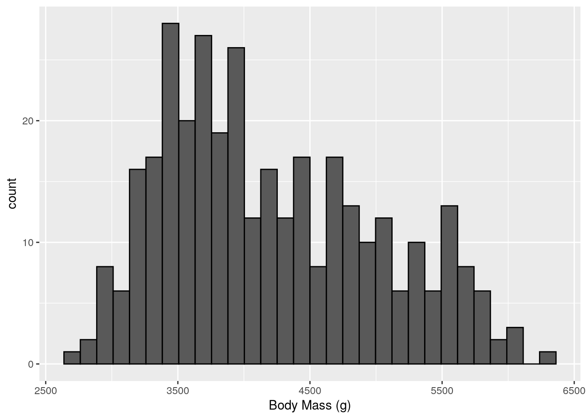
The setting color = "black" in geom_histogram makes the ggplot2 draw black borders around the histogram bars (the default is no borders).
To make a density plot instead, we can simply change the geometry:
ggplot(penguins) +
aes(x = body_mass_g) +
geom_density() +
labs(x = "Body Mass (g)")Warning: Removed 2 rows containing non-finite outside the scale range
(`stat_density()`).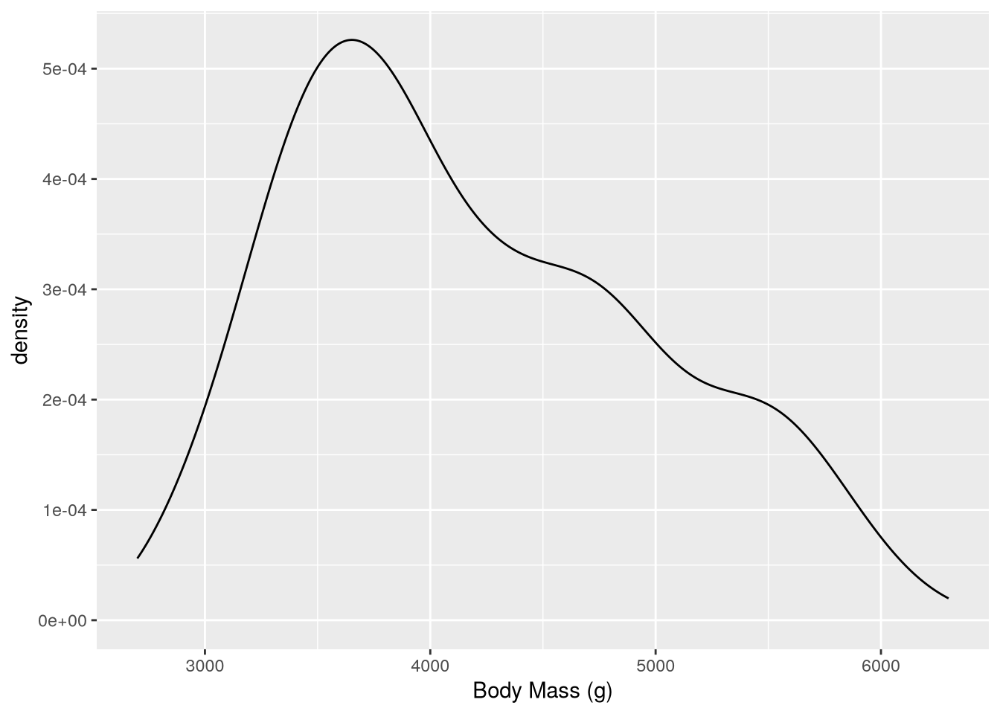
Tip
If you want the bottom of the plot to be at y-axis 0, you can add a scale layer with the expand parameter set to 0:
ggplot(penguins) +
aes(x = body_mass_g) +
geom_density() +
labs(x = "Body Mass (g)") +
scale_y_continuous(expand = c(0, 0))Warning: Removed 2 rows containing non-finite outside the scale range
(`stat_density()`).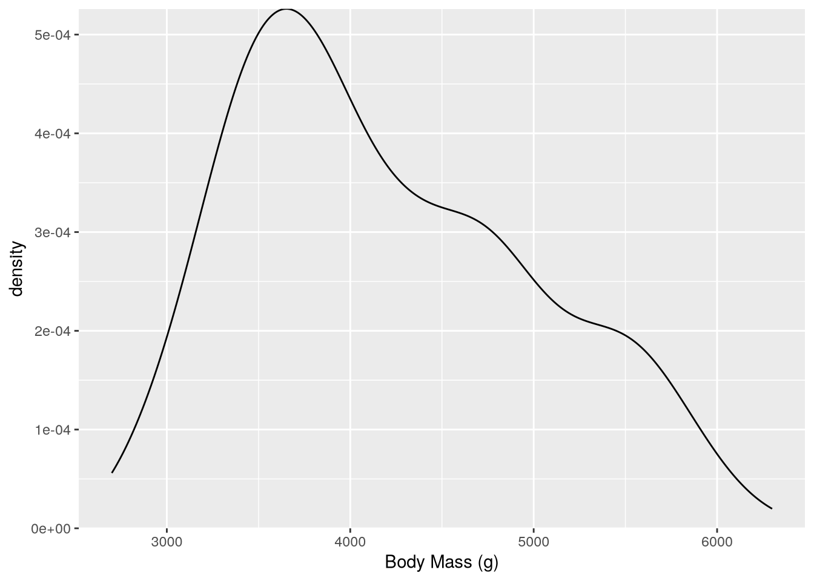
The expand parameter controls how much padding ggplot2 adds at the bottom and top of the axis.
Density plots are convenient when you want to break down the distribution of a continuous feature across the categories of a categorical feature, because the plot can show a separate line for each category. For instance, to group body mass by species:
ggplot(penguins) +
aes(x = body_mass_g, color = species) +
geom_density() +
labs(x = "Body Mass (g)", color = "Species")Warning: Removed 2 rows containing non-finite outside the scale range
(`stat_density()`).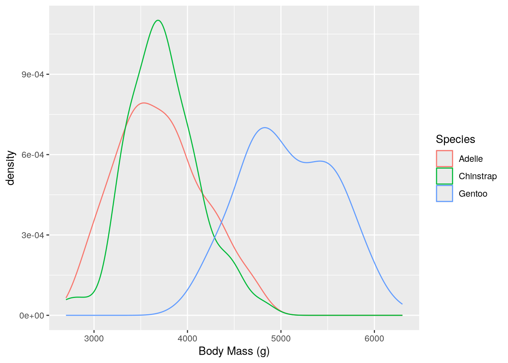
This makes it easy to see that Gentoo penguins typically have more mass than the other two species.
As in Section 5.5, you can incorporate more categorical features by faceting. To incorporate another continuous feature, it’s necessary to change plot types.
You can visualize the distributions of and relationship between two continuous features with a scatter plot (geom_point) or a smoothed scatter plot (again geom_density_2d). The latter smooths out the points in a scatter plot to show their relative density, using a 2-dimensional generalization of the method used to estimate a density plot. For instance, to plot body weight against flipper length:
ggplot(penguins) +
aes(x = body_mass_g, y = flipper_length_mm, color = species) +
geom_density_2d() +
labs(
x = "Body Mass (g)",
y = "Flipper Length (mm)",
color = "Species"
)Warning: Removed 2 rows containing non-finite outside the scale range
(`stat_density2d()`).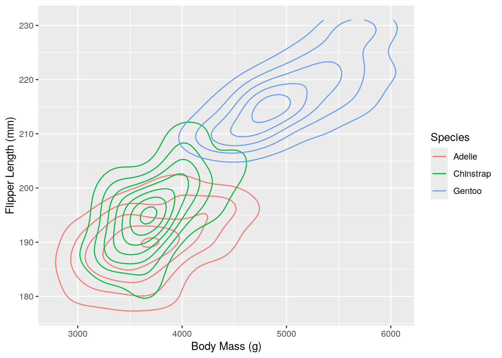
In this plot it’s possible to see how the distributions of body mass and flipper length differ across species, as well as how body mass and flipper mass are related.
Tip
Visualizing more than two continuous features at once can be challenging. One way to get around this problem is to create a separate plot for each pair of features.
If it really is necessary to visualize more than two at once, consider converting at least one of them into a categorical feature by binning or discretizing the values. Then you can use strategies for categorical features such as varying colors and faceting.
5.7 Case Study: Plotting a Time Series
Note
This case study shows how to:
- Convert temporal data to appropriate data types
- Plot a time series as a histogram or a line
- Use multiple data sets in a single plot
- Customize and rotate the text of tick labels
Plotting a time series can be tricky because you first need to make sure that the temporal features have appropriate data types. For this case study, suppose you want to make a visualization that shows the relationship between flu rates in birds and humans.
People mail dead birds to the USDA and USGS, where scientists analyze the birds to find out why they died. The USDA compiles the information into a public Avian Influenza data set each year.
Important
You can download the Avian Influenza data HERE.
We’ll use the readr package’s read_csv function to read the data. Compared to R’s built-in read.csv function, this function is faster and more robust against incorrect formatting.
The data’s headers contain spaces, which are inconvenient for working in R. With the read_csv function, we can set name_repair = "universal" to have it automatically fix all column names so that they are syntactically valid:
# install.packages("readr")
library("readr")
birds_path = "data/hpai-wild-birds-ver2.csv"
birds = read_csv(birds_path, name_repair = "universal")New names:
Rows: 6542 Columns: 8
── Column specification
──────────────────────────────────────────────────────── Delimiter: "," chr
(8): State, County, Date.Detected, HPAI.Strain, Bird.Species, WOAH.Class...
ℹ Use `spec()` to retrieve the full column specification for this data. ℹ
Specify the column types or set `show_col_types = FALSE` to quiet this message.
• `Date Detected` -> `Date.Detected`
• `HPAI Strain` -> `HPAI.Strain`
• `Bird Species` -> `Bird.Species`
• `WOAH Classification` -> `WOAH.Classification`
• `Sampling Method` -> `Sampling.Method`
• `Submitting Agency` -> `Submitting.Agency`str(birds)spc_tbl_ [6,542 × 8] (S3: spec_tbl_df/tbl_df/tbl/data.frame)
$ State : chr [1:6542] "South Carolina" "South Carolina" "North Carolina" "North Carolina" ...
$ County : chr [1:6542] "Colleton" "Colleton" "Hyde" "Hyde" ...
$ Date.Detected : chr [1:6542] "1/13/2022" "1/13/2022" "1/12/2022" "1/20/2022" ...
$ HPAI.Strain : chr [1:6542] "EA H5N1" "EA H5N1" "EA H5N1" "EA H5N1" ...
$ Bird.Species : chr [1:6542] "American wigeon" "Blue-winged teal" "Northern shoveler" "American wigeon" ...
$ WOAH.Classification: chr [1:6542] "Wild bird" "Wild bird" "Wild bird" "Wild bird" ...
$ Sampling.Method : chr [1:6542] "Hunter harvest" "Hunter harvest" "Hunter harvest" "Hunter harvest" ...
$ Submitting.Agency : chr [1:6542] "NWDP" "NWDP" "NWDP" "NWDP" ...
- attr(*, "spec")=
.. cols(
.. State = col_character(),
.. County = col_character(),
.. Date.Detected = col_character(),
.. HPAI.Strain = col_character(),
.. Bird.Species = col_character(),
.. WOAH.Classification = col_character(),
.. Sampling.Method = col_character(),
.. Submitting.Agency = col_character()
.. )
- attr(*, "problems")=<externalptr> Each row corresponds to one bird death. There are 8 columns with information about the date, species of bird, collection method, and location. The Date.Detected column is a date, while the rest of the columns are categorical, which you can see in the structural summary.
The dates are in month-day-year order, so we can parse them with the lubridate package’s mdy function. We can use the dplyr package and R’s built-in factor function to concisely convert the remaining columns to factors:
# install.packages("lubridate")
# install.packages("dplyr")
library("lubridate")
library("dplyr")
birds$Date.Detected = mdy(birds$Date.Detected)
birds = mutate(birds, across(-Date.Detected, factor))
Tip
Specifying appropriate data types when you read data often provides performance benefits, but doing data type conversions later gives you more flexibility to clean the data first. So which approach you should use in any given situation depends on the data set and your analysis goals.
What kind of plot is appropriate for this dataset? Note that there are several dates where more than one bird was collected:
arrange(count(birds, Date.Detected), desc(n))# A tibble: 248 × 2
Date.Detected n
<date> <int>
1 2022-10-25 366
2 2022-11-21 148
3 2022-09-13 129
4 2022-09-23 128
5 2022-02-16 109
6 2022-12-20 96
7 2022-11-16 89
8 2023-01-04 88
9 2022-12-06 86
10 2022-10-07 81
# ℹ 238 more rowsWhile you could use a line plot to show the counts for each date, there are also many dates where the counts are zero. To see a smoothed out version of the line plot, you can use a histogram of the observations:
ggplot(birds) +
aes(x = Date.Detected) +
geom_histogram(color = "black")`stat_bin()` using `bins = 30`. Pick better value `binwidth`.Warning: Removed 2 rows containing non-finite outside the scale range
(`stat_bin()`).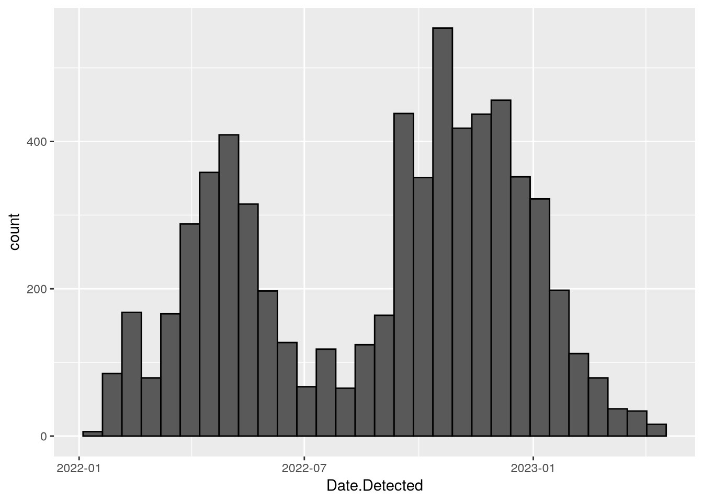
The data set includes information about how the birds were collected in the Sampling.Method column. You can incorporate this information in the plot by setting the fill aesthetic. In this case, stacked bars are a good choice since the focus is on the total counts for each date range rather than the individual sampling methods. The code becomes:
ggplot(birds) +
aes(x = Date.Detected, fill = Sampling.Method) +
geom_histogram(color = "black")`stat_bin()` using `bins = 30`. Pick better value `binwidth`.Warning: Removed 2 rows containing non-finite outside the scale range
(`stat_bin()`).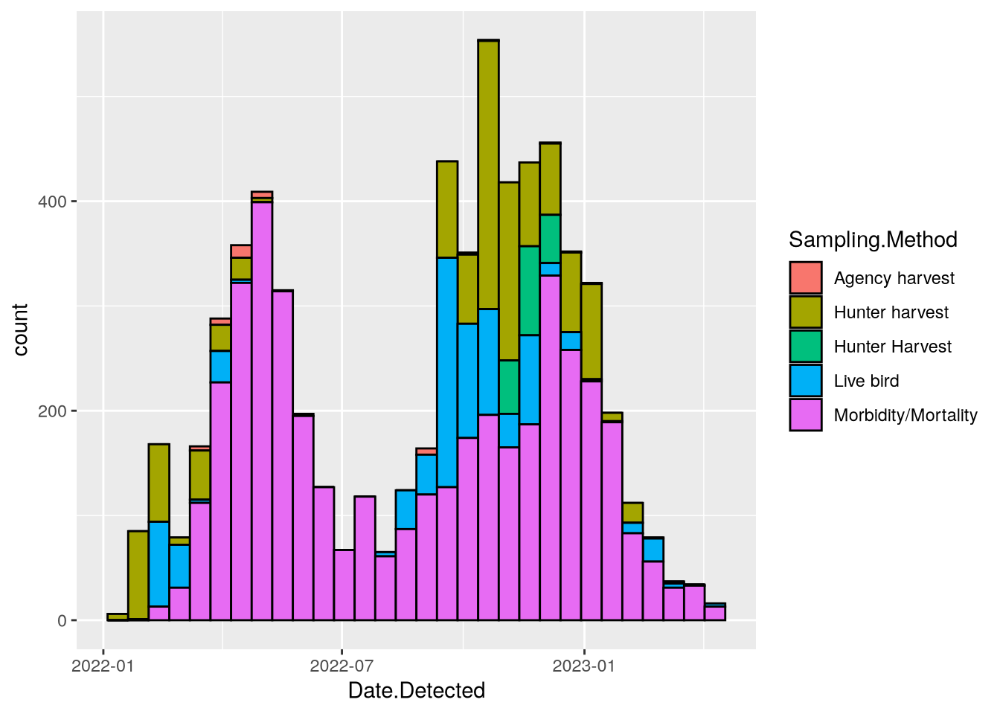
The plot looks good, so now let’s add data about human flu rates. The CDC collects data about flu hospitalizations across 13 states. The data is publicly available as the FluServ-NET data set.
Important
You can download the FluServ-NET data HERE.
In the FluServ-NET data set, each row corresponds to a single combination of week, year, age, sex, and race. There are 10 columns, which are a mix of data types. The CSV file the CDC provides contains extra text at the beginning and end, and the column names contain spaces and other problematic characters. You can read and clean up the data set with this code:
# install.packages("stringr")
library("stringr")
flu_path = "data/FluSurveillance_Custom_Download_Data.csv"
flu = read_csv(flu_path, name_repair = "universal", skip = 2)New names:
• `MMWR-YEAR` -> `MMWR.YEAR`
• `MMWR-WEEK` -> `MMWR.WEEK`
• `AGE CATEGORY` -> `AGE.CATEGORY`
• `SEX CATEGORY` -> `SEX.CATEGORY`
• `RACE CATEGORY` -> `RACE.CATEGORY`
• `CUMULATIVE RATE` -> `CUMULATIVE.RATE`
• `WEEKLY RATE` -> `WEEKLY.RATE`Warning: One or more parsing issues, call `problems()` on your data frame for details,
e.g.:
dat <- vroom(...)
problems(dat)Rows: 1538 Columns: 10
── Column specification ────────────────────────────────────────────────────────
Delimiter: ","
chr (6): CATCHMENT, NETWORK, YEAR, AGE.CATEGORY, SEX.CATEGORY, RACE.CATEGORY
dbl (4): MMWR.YEAR, MMWR.WEEK, CUMULATIVE.RATE, WEEKLY.RATE
ℹ Use `spec()` to retrieve the full column specification for this data.
ℹ Specify the column types or set `show_col_types = FALSE` to quiet this message.# Change column names to lowercase.
flu = rename_with(flu, str_to_lower)
# Remove the text at the end.
flu = filter(flu, catchment == "Entire Network")
# Convert the year and week columns to actual dates.
dates = make_date(year = flu$mmwr.year)
week(dates) = flu$mmwr.week
flu$date = datesFor the plot, we’ll only need the "Overall" age, sex, and race categories:
flu = filter(flu,
age.category == "Overall",
sex.category == "Overall",
race.category == "Overall"
)Now we can add a line for the weekly flu rates in the weekly_rate column to the bird mortality histogram. The weekly flu rates are measured in hospitalizations per 100,000 people and typically range from 0 to 100. Multiplying by 100 to convert to hospitalizations per 10 million people makes the range 0 to 1000, which is a nice match for the y-axis already on the plot.
Since we’re dealing with two datasets, we’ll move the data and aesthetics layers for each into the calls to the respective geom_ functions. We’ll also add a title and a label to clarify what the y-axis means. The code becomes:
ggplot() +
geom_histogram(
aes(x = Date.Detected, fill = Sampling.Method),
birds,
color = "black"
) +
geom_line(aes(x = date, y = weekly.rate * 100), flu) +
labs(
x = "Date Detected",
y = "Reported bird deaths\nHospitalizations per 10 million people"
)`stat_bin()` using `bins = 30`. Pick better value `binwidth`.Warning: Removed 2 rows containing non-finite outside the scale range
(`stat_bin()`).Warning: Removed 4 rows containing missing values or values outside the scale range
(`geom_line()`).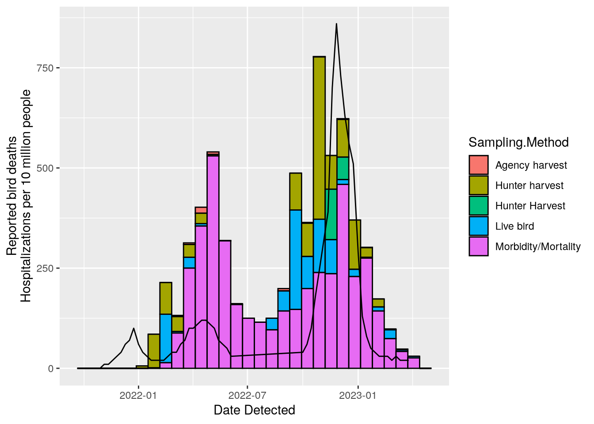
5.8 Case Study: Plotting a Function
Note
This case study shows how to:
- Plot a function
- Fill the area under a function
- Set custom colors for lines, fills, and annotations
- Hide the axes of a plot
- Add annotations to a plot
Plotting a curve or function can make it much easier to understand and explain its behavior. For this case study, suppose you want to make a visualization that shows how the area of overlap between two different probability density functions is a measure of how similar they are. They should have some overlap, but not too much. The color palette should be UC blue (#1a3f68) and gold (#e6c257) to match the rest of your presentation.
Note
A probability density function is a function that shows how likely different outcomes are for a continuous probability distribution. The probability of outcomes in any given interval is the area under the curve. For example, if the area under the curve between 0 and 1 is 0.2, then there’s a 20% chance of an outcome between 0 and 1. The total area under the curve is always 1.
Since the total area under a probability density function is always 1, the area of overlap between two density functions is always between 0 and 1. As a result, the area of overlap is a convenient measure of similarity.
R provides probability density functions for common distributions. Let’s use a normal distribution and a gamma distribution. Normal distributions are widely known, while gamma distributions are visually different but will still have some overlap. The gamma distribution requires a shape parameter; let’s use 10.
f_norm = \(x) dnorm(x)
f_gamma = \(x) dgamma(x, 10)We can use ggplot2’s geom_function geometry to plot functions. This geometry will automatically evaluate the function at many points over an interval. We’ll use 1,000 points in the interval \((-20, 20)\). We’ll also set linetype = "dashed" on one of the lines so that they’re distinct. The code to make the plot is:
blue = "#1a3f68"
gold = "#e6c257"
n = 1000
xlim = c(-20, 20)
ggplot() +
geom_function(
fun = f_norm,
n = n, xlim = xlim, color = blue
) +
geom_function(
fun = f_gamma,
n = n, xlim = xlim, color = blue,
linetype = "dashed"
)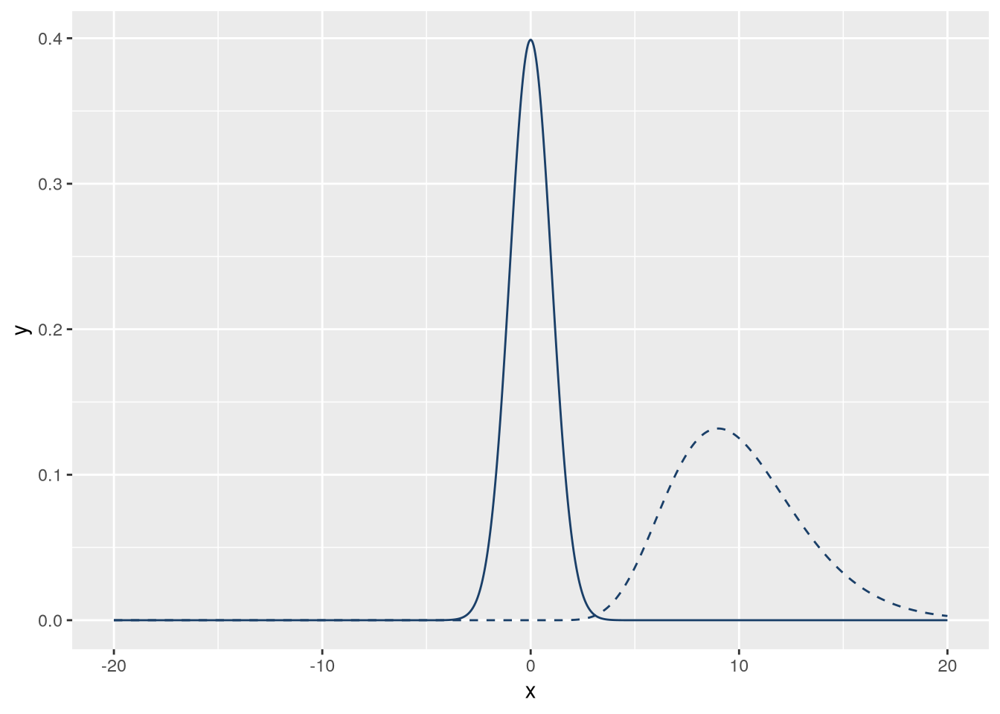
The two distributions don’t overlap much, but we can fix that by adjusting their parameters. To get some overlap, let’s increase the standard deviation (sd) of the normal distribution to 4 and shift the location of the gamma distribution left by 2. Then the code for the plot becomes:
f_norm = \(x) dnorm(x, sd = 4)
f_gamma = \(x) dgamma(x + 2, 10)
blue = "#1a3f68"
gold = "#e6c257"
n = 1000
xlim = c(-20, 20)
ggplot() +
geom_function(
fun = f_norm,
n = n, xlim = xlim, color = blue
) +
geom_function(
fun = f_gamma,
n = n, xlim = xlim, color = blue,
linetype = "dashed"
)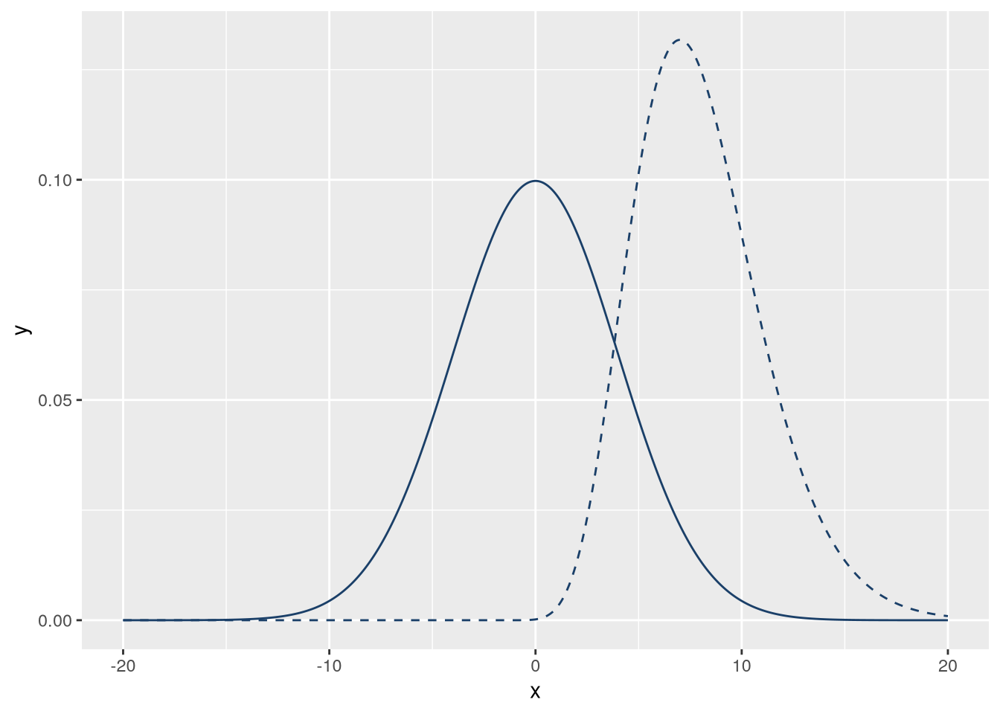
Let’s emphasize the overlap by filling it with a color. The area of overlap is the area underneath whichever function happens to be smaller at a given point—the minimum of the two functions. We can define a new function, f_min, that gives the minimum. We’ll use R’s pmin function to compute the element-wise minimum.
To add the f_min function to the plot with a fill color, we’ll use the stat_function statistic with geom = "polygon" instead of the geom_function geometry. The layer for this function also needs to come first, so that it’s under the other layers. So the code becomes:
f_norm = \(x) dnorm(x, sd = 4)
f_gamma = \(x) dgamma(x + 2, 10)
f_min = \(x) pmin(f_norm(x), f_gamma(x))
blue = "#1a3f68"
gold = "#e6c257"
n = 1000
xlim = c(-20, 20)
ggplot() +
stat_function(
fun = f_min,
geom = "polygon",
xlim = xlim, n = n, fill = gold
) +
geom_function(
fun = f_norm,
xlim = xlim, n = n, color = blue
) +
geom_function(
fun = f_gamma,
linetype = "dashed",
xlim = xlim, n = n, color = blue
)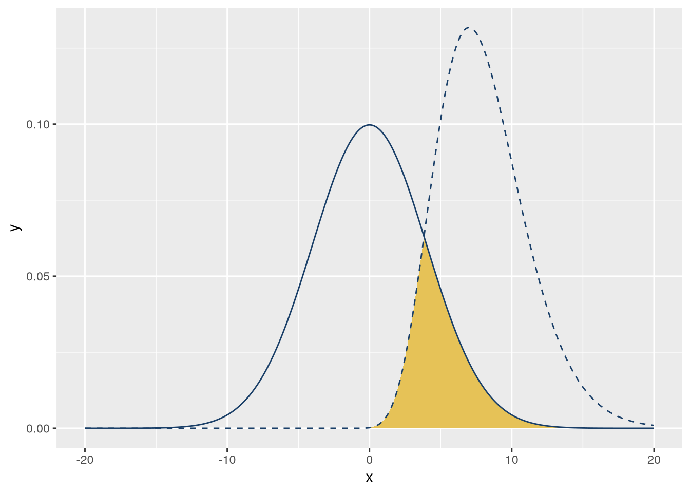
This diagram is meant to make it easier to explain area of overlap, which is shown by the curves and fill. The axis ticks and labels don’t aid understanding, so let’s remove them. You can remove all decorations on a plot by adding the theme_void theme. Let’s also adjust the x interval to \((-15,
25)\) to center the curves:
f_norm = \(x) dnorm(x, sd = 4)
f_gamma = \(x) dgamma(x + 2, 10)
f_min = \(x) pmin(f_norm(x), f_gamma(x))
blue = "#1a3f68"
gold = "#e6c257"
n = 1000
xlim = c(-15, 25)
ggplot() +
stat_function(
fun = f_min,
geom = "polygon",
xlim = xlim, n = n, fill = gold
) +
geom_function(
fun = f_norm,
xlim = xlim, n = n, color = blue
) +
geom_function(
fun = f_gamma,
linetype = "dashed",
xlim = xlim, n = n, color = blue
) +
theme_void()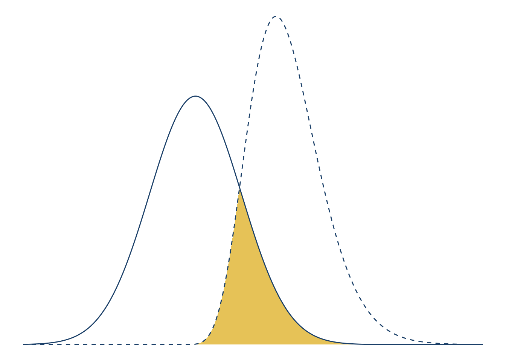
Finally, let’s add a text label and arrow to emphasize the area of overlap. You can use the annotate function to add an annotation to a plot. Annotations are flexible: they can be points, lines, text, or almost any other geometry. With the annotations, the plot becomes:
f_norm = \(x) dnorm(x, sd = 4)
f_gamma = \(x) dgamma(x + 2, 10)
f_min = \(x) pmin(f_norm(x), f_gamma(x))
blue = "#1a3f68"
gold = "#e6c257"
n = 1000
xlim = c(-15, 25)
ggplot() +
stat_function(
fun = f_min,
geom = "polygon",
xlim = xlim, n = n, fill = gold
) +
geom_function(
fun = f_norm,
xlim = xlim, n = n, color = blue
) +
geom_function(
fun = f_gamma,
linetype = "dashed",
xlim = xlim, n = n, color = blue
) +
theme_void() +
annotate(
# Use the segment geometry to make a line.
# Use the arrow parameter and arrow function to make an arrow.
geom = "segment", arrow = arrow(ends = "first"),
x = 5, xend = 15, y = 0.01, yend = 0.1,
color = blue
) +
annotate(
geom = "text",
# Multiply by 1.01 to nudge the position slightly.
x = 15 * 1.01, y = 0.1 * 1.01,
label = "overlap", size = 10,
hjust = "left", vjust = "bottom",
color = blue
)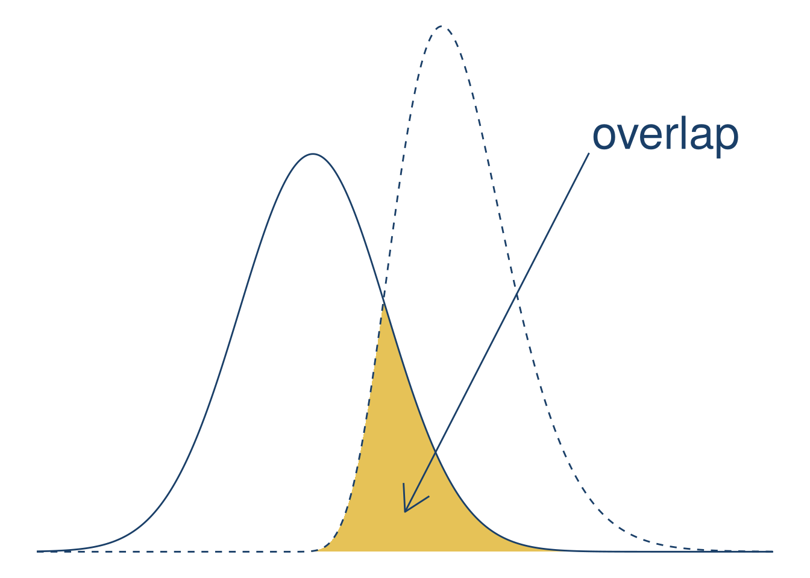
5.9 Case Study: Error Bars
Note
This case study shows how to:
- Add error bars to a plot
This case study is based on a question that came up in DataLab’s office hours. Suppose you’ve done an experiment to see how mice with two different genotypes respond to two different treatments. Now you want to make a bar plot of the mean response for each group, with error bars indicating the standard deviation of the mean. You also want to show the raw data. I’ve simulated some data for us to use.
Important
You can download the simulated genotype data HERE.
To make this work, we have to tell ggplot2 how to calculate the heights of the mean bars and the error bars.
mice_geno = read_csv("data/genotype-response.csv")
# show the treatment response for different genotypes
ggplot(mice_geno) +
aes(
x = trt,
y = resp,
fill = genotype
) +
geom_bar(
position = position_dodge(),
stat = "summary",
fun = "mean"
) +
geom_errorbar(
fun.min = function(x) {mean(x) - sd(x) / sqrt(length(x))},
fun.max = function(x) {mean(x) + sd(x) / sqrt(length(x))},
stat = "summary",
position = position_dodge(0.9),
width = 0.2
) +
geom_point(
position = position_jitterdodge(dodge.width = 0.9, jitter.width = 0.1)
) +
scale_fill_brewer(palette = "Dark2") +
labs(
x = "Treatment",
y = "Response (mm/g)",
title = "Mean growth response of mice by genotype and treatment"
)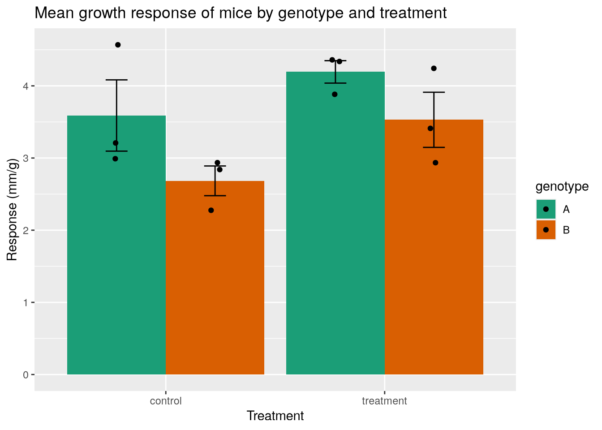